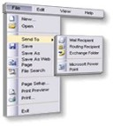

 Easy to use HTML to Create the DHTML Menu
Easy to use HTML to Create the DHTML Menu
Unlike most other DHTML menus, you build the Zapatec DHTML Menu
using HTML, not Javascript. You don't need to learn any new functions or
worry about making javascript syntax errors. You construct the DHTML
Menu just as you would nested HTML lists using <ul> and <li>.
Search Engine Friendly
Since the DHTML Menu is created using HTML,
search engines can
follow the links , which they can't do if the menu is built in
Javascript. This is crucial for sites that care about SEO (Search Engine
Optimization).
Include HTML Markup in Your Menu
An additional benefit of the Menu being created using HTML is that you can
include most standard HTML markup into your menu including tooltips and form
elements such as check marks and input boxes.
Many themes to choose from
Choose from the many themes included with the menu. Since the Menu's themes are created entirely in CSS
adjusting or creating a new theme is both familiar and easy.
Horizontal or vertical menus
Configure the Zapatec DHTML Menu as either a vertical or horizontal menu.
On hover or on click activation
Configure the sub-menus to show either when users hover over the menu headers or when they
click on them.
Supported on a Wide Variety of Browsers
The DHTML Menu's code has been tested on Internet Explorer 5.0, 5.5, 6.0,
Mozilla 1.2 and up, Opera 7 and up Firefox 0.8 and up, Konqueror 3.1.2
and up.
Use the Wizard to Setup and Check Features
Use the Zapatec
DHTML Menu Wizard to create
a DHTML Menu with the exact features you want.
Once you are done, click on
generate and you can cut and paste the code into
your web page.
You can also use the Wizard to try out different configuration options and see how they affect
your menu.
New effects
Apply glide, fade, or both effects to your menus resulting in a more splashy presentation. Check out the
demo.
Tooltips in your menu
Just add the "Title" property to your <LI> and these will now be used as tooltips just as
in standard HTML. Check out the
demo.
Menu icons
Zapatec menu package includes icons for common Internet menu items such as
buy, shopping cart, products, services, home, etc.
Check out the
demo.
Propagated Class Attribute
As part of our approach of making menu construction feel like standard HTML
the "class" attribute for any LI is propagated to the menu. Not only can you use our themes, but
you can customize them using your own CSS classes.
Window Border Detection
The menu detects when a sub-menu will not fit on the screen and display it in the
opposite direction. If a vertical sub-menu is too close to the right hand side of the screen,
for instance, it will display to the left instead of to the right.
Well documented javascript code
The DHTML Menu's javascript objects, properties and methods are
well documented and include
the color coded Javascript source.